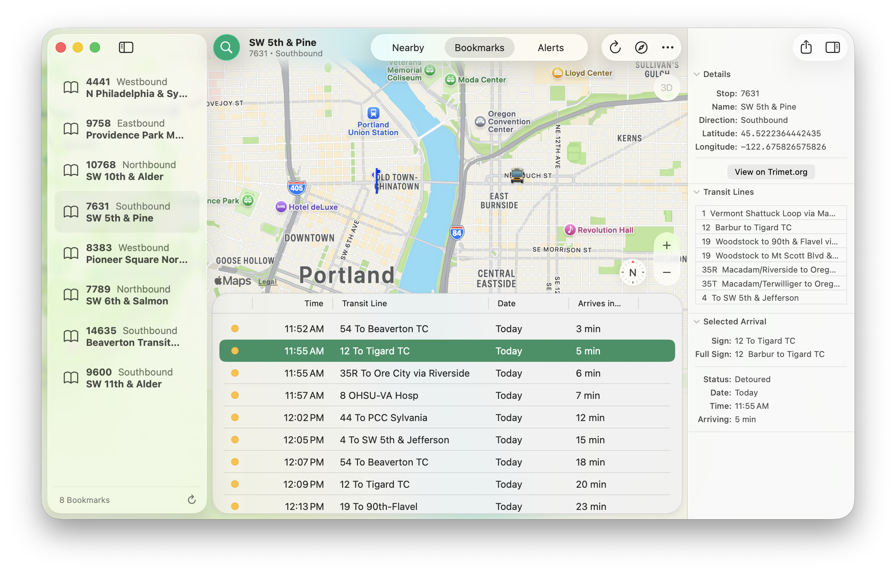
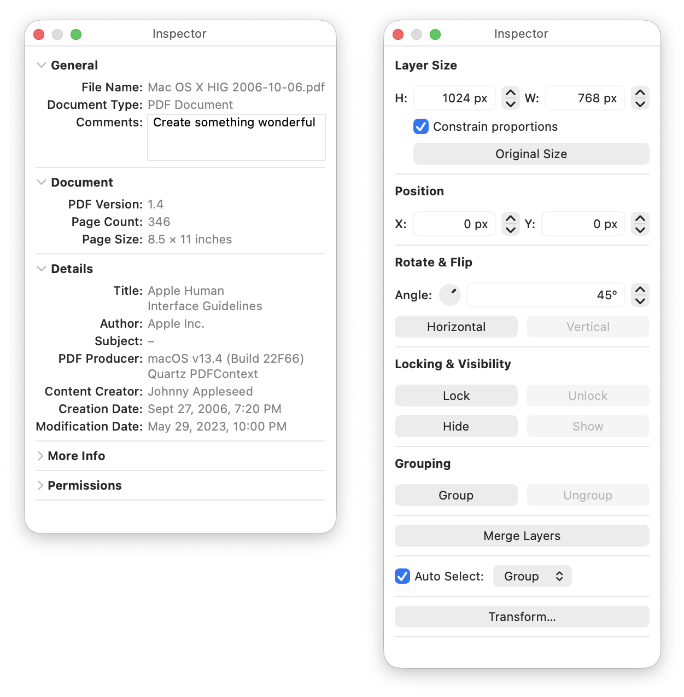
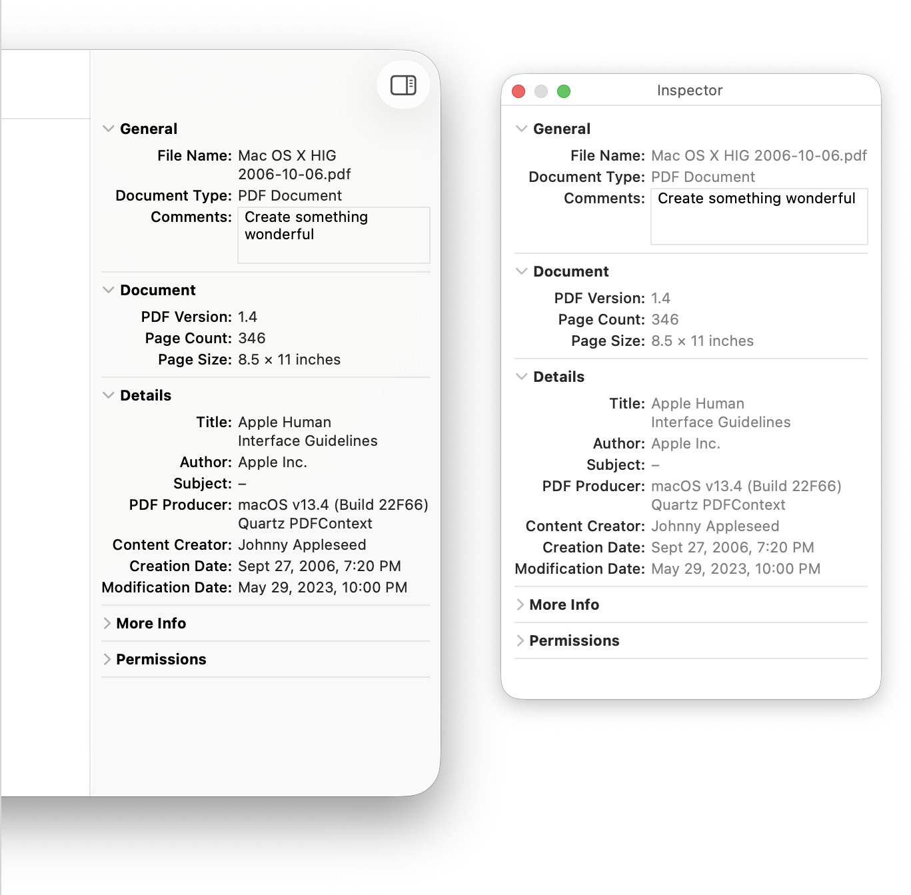
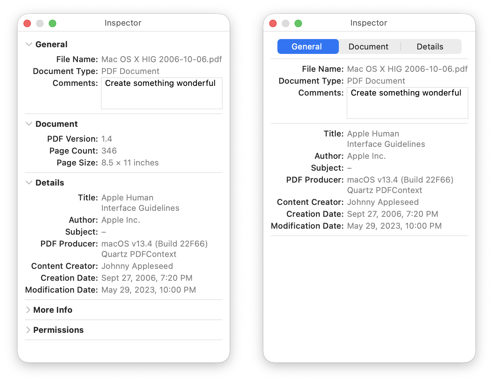
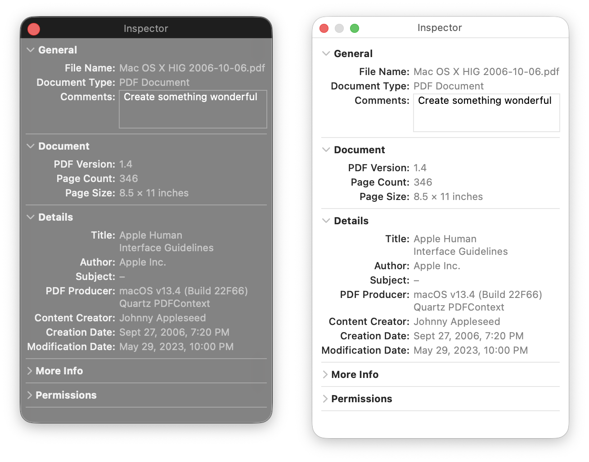

The following sections are general guidelines that describe fundamental Inspector design principles for Mac applications. Following these guidelines will help you create functional and consistent Inspector implementations that are easy for Mac users to understand and use.

PDX Transit with an Inspector Sidebar displaying metadata for both the selected transit stop and selected arrival.
Inspectors, whether panels or sidebars, help reduce the clutter of a user interface by placing auxiliary information or controls that can be shown or hidden by the user.
Inspector views are also contextual and dynamic. Depending on the context (what is currently selected or has focus), the content of the inspector is shown, enabled, or completely hidden. The inspector should update its content or what is enabled as soon as the selection or focus changes.
Inspector panels float on top of the app's windows and disappear when the app is deactivated (not at the forefront).
Most Inspector panels use the standard panels UI, which means that they use the same textures in the window body and title bar that a standard window does. Also, an Inspector panel with standard UI must use small versions of the standard UI controls.
In some cases, you may need to use the HUD-style panel, which means that they use a dark, translucent background for the window body and title bar, and they use small white and gray UI elements.
Inspectors often display two types of content:

Inspector Panels showing informational metadata for a selected document and controls for a selected layer in an image editor application.
Inspectors can be displayed in two ways:

Your application can display an Inspector as a sidebar or as a Panel.

Inspector Panels displaying metadata organized in disclosure groups or tabs using a tab view.
Content should be organized into collapsible sections with disclosure buttons, grouped under tabs (using a tab view), or a mixture of both. Sensible organization allows users to easily remember how to get back to a control they may need.
Inspectors, especially those in panel windows, should use the small control size and be organized densely within their view. Inspector panel windows should not take up too much space.
For guidance on creating layouts for Mac apps, refer to the Layout Guidelines page.

An Inspector panel using the HUD style on the left.
In general, use the standard UI for your Inspector panel. For some apps, such as highly visual, immersive, HUD-style Inspector panels are appropriate. The dark translucent background of HUD-style Inspector panels are meant to help minimize distraction in video or image editing applications.
Have a good reason to use a transparent panel instead of a standard panel. Users can be distracted or confused by a transparent panel when there is no logical reason for its presence. In general, you should use transparent panels only when at least one of the following statements is true:
Each Inspector panel in your app can have its own style (some standard, some HUD-style), however, always keep it consistent. The same Inspector panel should not switch between styles depending on the state or mode of your application.
Whether your inspector is a panel or a sidebar, it needs sensible minimum and maximum width limits. A good starting point is 225-275 pts as a minimum width and 350-400 pts for a maximum width.
I enjoy creating content that helps other Mac developers ship their best possible work. If you find this content useful and if you're able to, consider perhaps buying me a coffee. But if not, no worries! I'd appreciate you at least sharing this document with your fellow Mac developers posting it on social media! Thank you!
Reach out via Mastodon if you have suggestions that would improve this article.
Mastodon